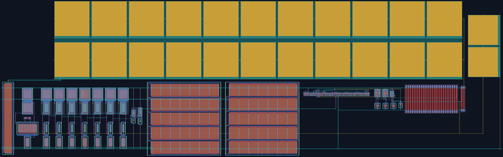

The extracted, DRC and LVS clean layout of the ×8 charge-pump PLL, block by block. Each block shows its silicon crop, its footprint, the transistor-level circuit and what it does in the loop. Click any block on the chip to jump to it.

Dashed outlines mark each block's device-layer bounding box. Wiring between blocks runs on met3 (cyan) and met4 (yellow).
About 40 % of the die is the 40 pF loop-filter capacitor. It is MiM (metal-insulator-metal) on met3/met4, so it sits above the substrate but cannot share area with the strip below, which needs those layers for routing.
The phase-frequency detector compares the reference with the VCO output divided by 8. It drives the charge pump, which pushes or pulls a tiny current into the loop filter. The filter voltage VCTRL steers the VCO until the divided output lines up with the reference in phase. Then VOUT = 8 × REF.
Closed-loop transient simulations on the full extracted chip (layout capacitances included), across process, voltage, temperature and Monte Carlo. Every point passes contract v2.